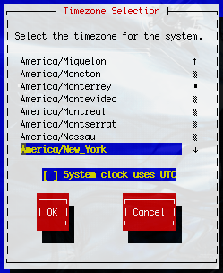
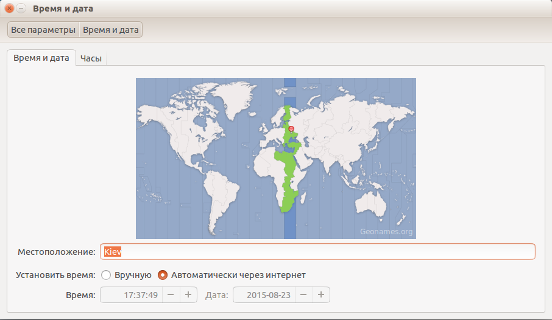
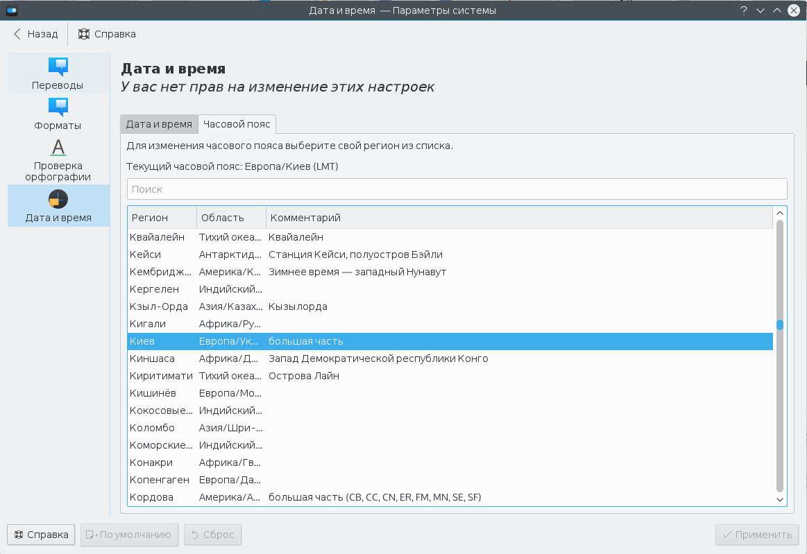

Мы очень часто пользуемся временем в Linux, начиная от простой задачи узнать сколько сейчас времени, до более сложной — посмотреть логи или узнать когда произошло то или иное событие в системе. Все завязано на времени, поэтому очень важно, чтобы часы шли правильно.
Наша планета разделена на часовые пояса, это было сделано с одной простой целью, чтобы время в любой точке планеты соответствовало солнечному времени. Время между этими зонами отличается на час и всего таких поясов — 24, за эталон взято время по нулевому, Гринвичскому меридиану.
Поэтому в определенный момент время в разных участках планеты будет отличаться на час. В этой небольшой статье мы рассмотрим как изменить часовой пояс Linux, чтобы операционная система правильно работала со временем и могла правильно его синхронизировать через интернет.
Операционная система Linux хранит и обрабатывает системное время в специальном Unix формате — количество секунд прошедших с полуночи первого января 1970 года. Эта дата считается началом эпохи Unix. И используется не ваше локальное время, а время по гринвичскому меридиану.
Для преобразования времени по Гринвичу в региональное время используется часовой пояс. Это преобразование выполняется для каждого пользователя. Это необходимо, чтобы каждый пользователь мог настроить для себя правильное по его временной зоне время. Такое поведение просто необходимо на серверах, когда на одной машине могут работать люди из разных частей мира.
По умолчанию в системе может быть установлен неправильный часовой пояс, это приведет к путанице в логах событий, да и другим трудностям. Но все это легко исправить. Дальше мы рассмотрим несколько способов изменить часовой пояс Linux.
Настройка часового пояса в /etc/localtime
Наиболее популярный и поддерживаемый в большинстве дистрибутивов способ установки часового пояса для всех пользователей — с помощью символической ссылки /etc/localtime на файл нужного часового пояса. Список доступных часовых поясов можно посмотреть командой:
ls /usr/share/zoneinfo/
Сначала создайте резервную копию текущего часового пояса:
cp /etc/localtime /etc/localtime.bak
Для создания символической ссылки используйте команду ln -sf. Файл зоны нужно выбрать из доступных в системе. Например, мой часовой пояс — Украина, Киев, для установки будет использоваться следующая команда:
ln -sf /usr/share/zoneinfo/Ukraine/Kyiv /etc/locatime
Теперь можете проверить текущее системное время с помощью утилиты date:
date
Если у вас установлена утилита rdate можно синхронизировать время с сетью:
/usr/bin/rdate -s time-a.nist.gov
Осталось только синхронизировать ваши аппаратные часы с новыми настройками, для этого выполните команду:
Если нужно изменить часовой пояс только для определенной программы или скрипта, просто измените для нее переменную окружения TZ, например:
export TZ=Ukraine/Kyiv
Эта настройка сохраняется только для текущего сеанса командной оболочки. Чтобы сменить часовой пояс linux для определенного пользователя тоже нужно использовать переменную среды TZ. Только ее нужно добавить в файл ~/.environment. Этот файл читается по умолчанию при входе в систему, а значит переменная будет доступна всем программам:
vi ~/.environment
export TZ=Ukraine/Kyiv
Готово, теперь вы знаете как выполняется настройка часового пояса linux для определенного пользователя.
Если вы не хотите использовать описанный выше способ, можно воспользоваться специальными утилитами. Вот только в разных дистрибутивах используются свои утилиты. Рассмотрим варианты для самых популярных дистрибутивов.
В Red Hat Linux:
redhat-config-date
В CentOS и Fedora:
system-config-date
В Slackware или FreeBSD:
tzselect
В Ubuntu:
dpkg-reconfigure tzdata
tzconfig
В большинстве случаев вы увидите подобное диалоговое окно:

Здесь просто нужно выбрать нужный часовой пояс и нажать кнопку Enter. После этого для окончательного применения настроек нужно будет перезагрузить систему.
Настройка часового пояса в GUI
В дистрибутиве Ubuntu и других, использующих Gnome, настройка часового пояса linux может быть выполнена прямо в параметрах системы. Для этого выберите пункт Дата и время, выберите свое местоположение на карте, или наберите название для поиска в поле ввода:

В KDE аналогично можно установить часовой пояс в настройках системы. Запустите утилиту настроек, откройте пункт Локализация, перейдите в раздел Дата и время, а затем откройте вкладку Часовой пояс:

Остается выбрать часовой пояс в списке и нажать кнопку Применить. Здесь уже изменения должны проявиться моментально.